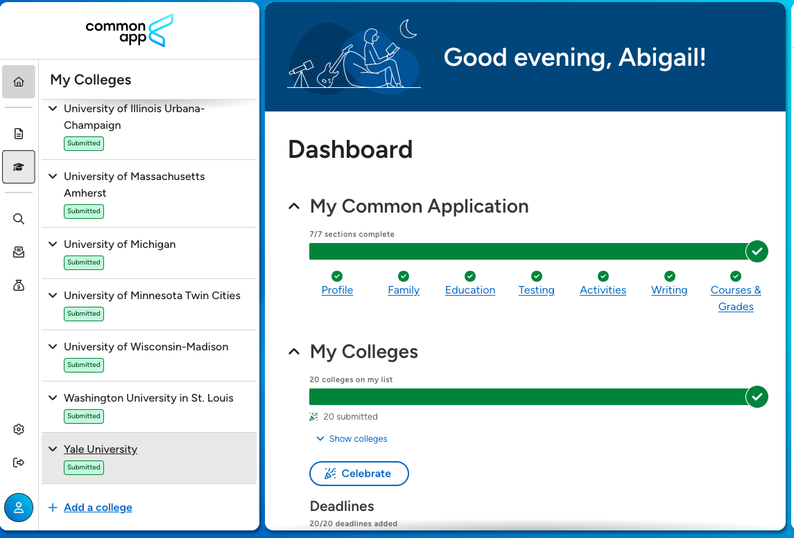
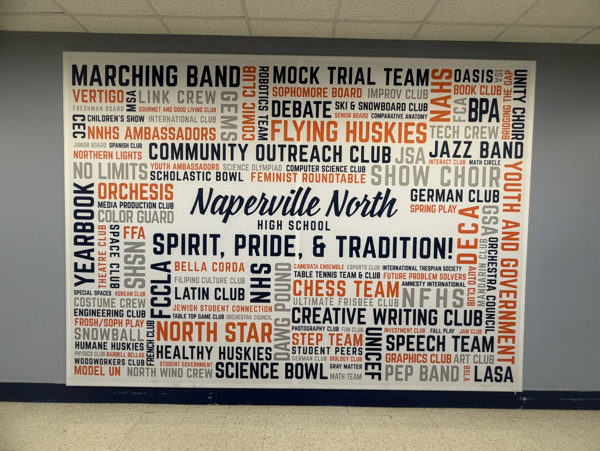
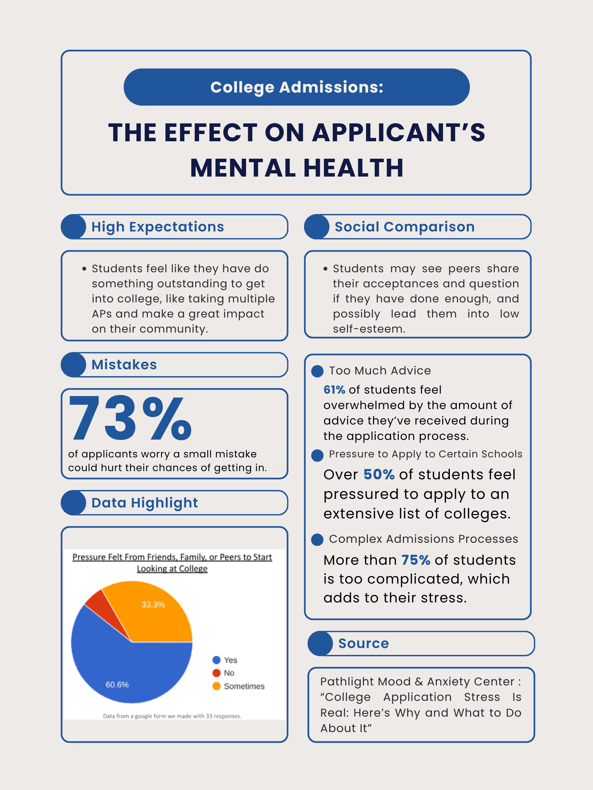
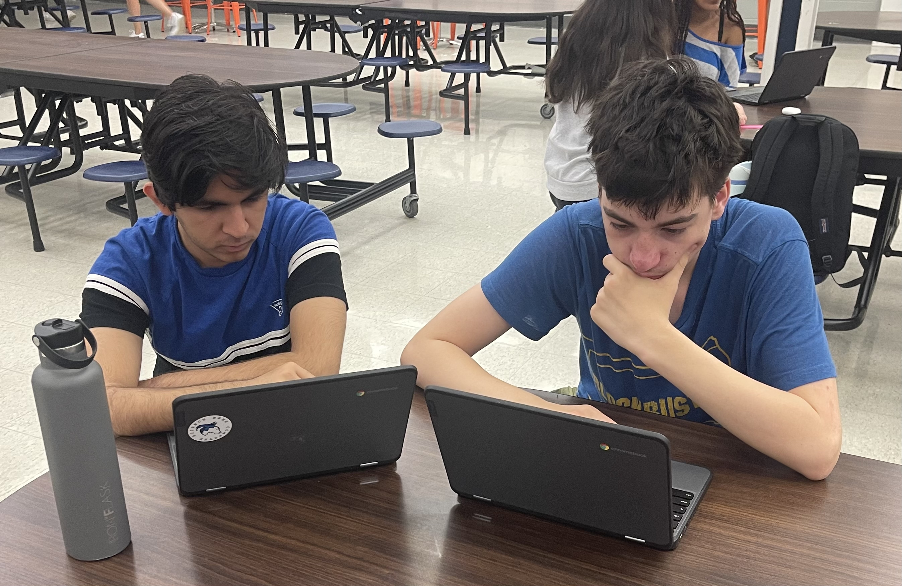
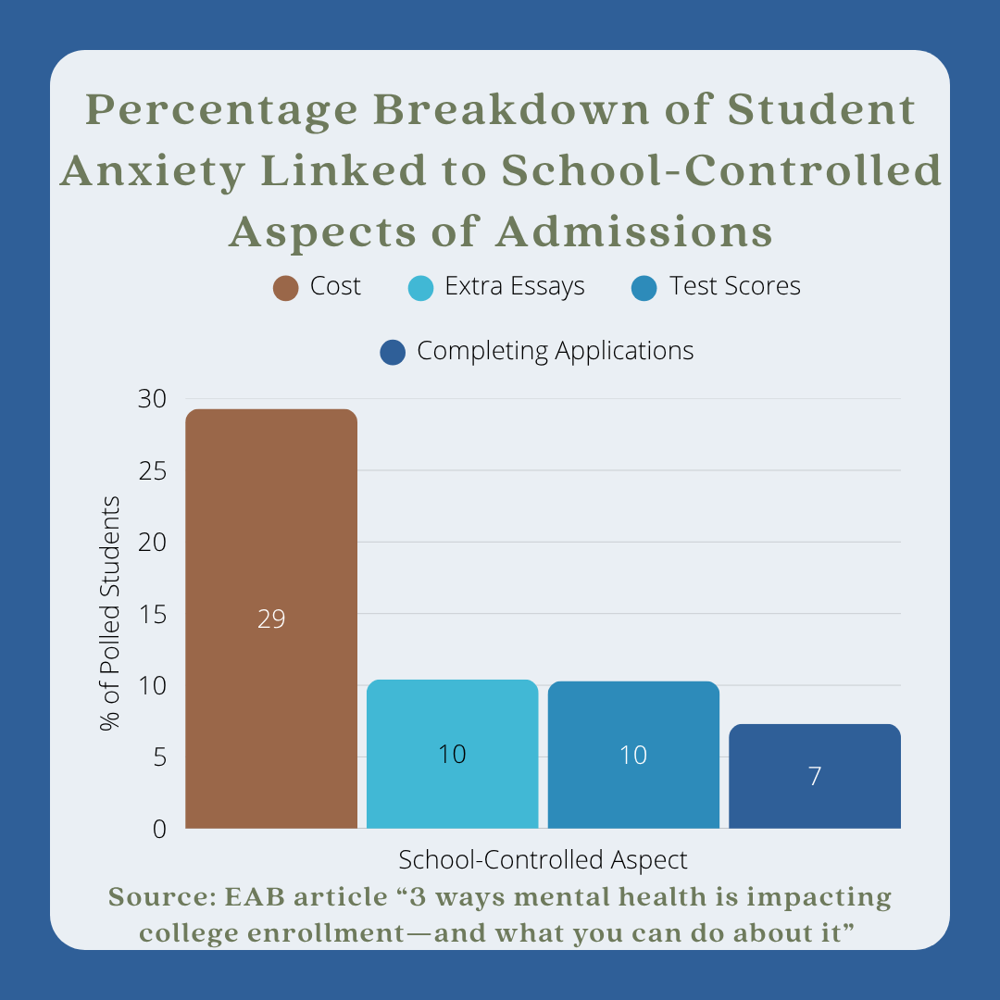

Picture this: juniors and seniors hunched over their laptops past midnight, every day for weeks, rigorously planning and reworking on their 500-word personal “About Me” Common App essay. In a Pew Research Center survey, more than half of young adult Americans say that the admissions process is more stressful than anything else they have done in school.
Year round, high school students struggle with the intensifying race to bulk up college applications. At Naperville North High School, engaging in extensive extracurricular, volunteer, and personal activities and projects while upholding classwork is a common trend in those aspiring to enter prestigious schools.
When it’s admission season, those applying can only hope for a decision that can determine their future employment. Naperville North’s college admission culture is too competitive, and it is taking a serious toll on the mental well-being of students.

This issue has continued to intensify as expectations from colleges have risen. It is no longer enough to simply be involved; active leadership and foundation have been standardized in our current culture.
While balancing coursework, the more competitive students at Naperville North are often found starting their own activities and projects or pushing their way into authoritative chair positions. What once stood out to admission officers is now an oversaturated baseline in resumés.

Ultimately, students constantly feel pushed to do more. According to the American Psychological Association, high schoolers consistently put academic pressure as one of their top sources of stress.
Free time is replaced with productivity, and hobbies are more so acquired with strategic intent. Instead of building genuine interests, students come to build their high school experiences around a presentable application.

Some may argue that these rising standards are what push newer generations to higher prestige, claiming that competition is what develops the resilience and innovative qualities needed for the real world. After all, training young minds determines the future, with a harsh underline for discipline.
However, these perspectives overlook the mental burnout students can experience; when students get under overwhelming pressure, it often diminishes their ability to grow. ZipDo, a meticulous statistical database, states in a report that 66% of students experience formidable amounts of stress and one in three meet the criteria for a mental health disorder.
Development and success should never come at the expense of one’s well-being; our modern system does not foster balanced flourishing.

The current culture has also exacerbated inequality among student bodies. Everybody varies in access to resources and time needed to pursue the exaggerated qualities that universities want to see.
According to Best Colleges, an online student aid source for college planning, 62% of lower-income students report high levels of anxiety, compared to the 43% of their peers. This highlights the inherent unfairness of the process; those with less givens must sacrifice more energy and retain additional stress just to keep up.

In addition, the frequent adoption of quantity over quality of experiences undermines the value of meaningful involvement and what is true to a student’s real interests. Even applications themselves have skyrocketed in number, which has depleted acceptance rates, especially of prestigious schools.
To appear well-rounded, some students may join activities without deep engagement. According to the Ivy Scholars, an educational consultation service, the most invested students now commonly apply to 15 or more schools, compared to the formerly accepted one or two.
Extracurriculars, which should be routes to explore one’s passions and development, have now devolved simply into a building block for applications.

Naperville North prides itself on developing whole and balanced students. Unfortunately, a corrosive culture that replaces discovery and passion with resume padding has taken hold.
Modern hypercompetition has left this promise unfulfilled and student well-being should not continue to be held at stake. Before another graduating class burns out, administrators, students, and guardians must begin actively choosing healthy development over a filler academic appearance.
